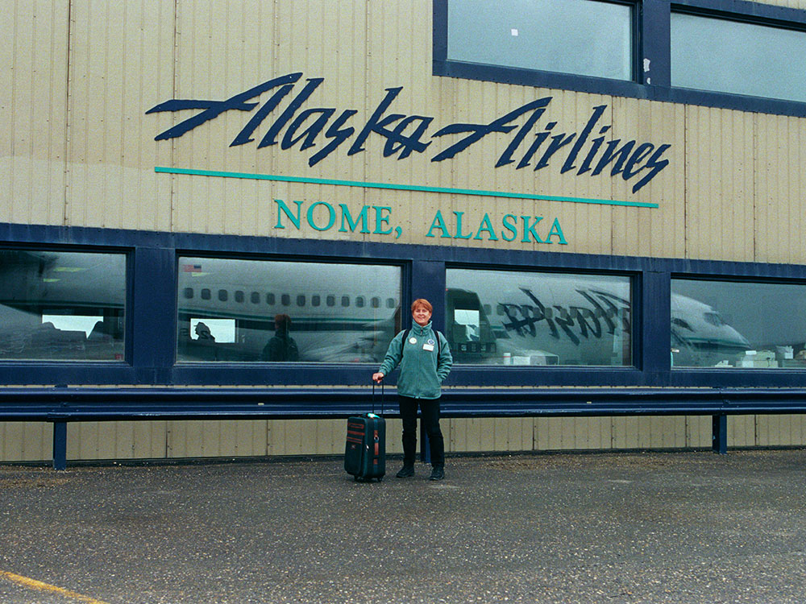
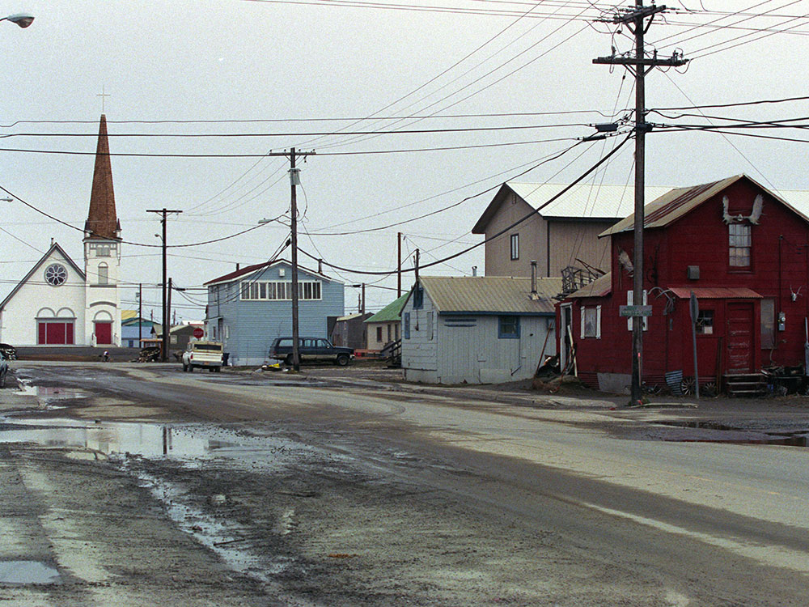
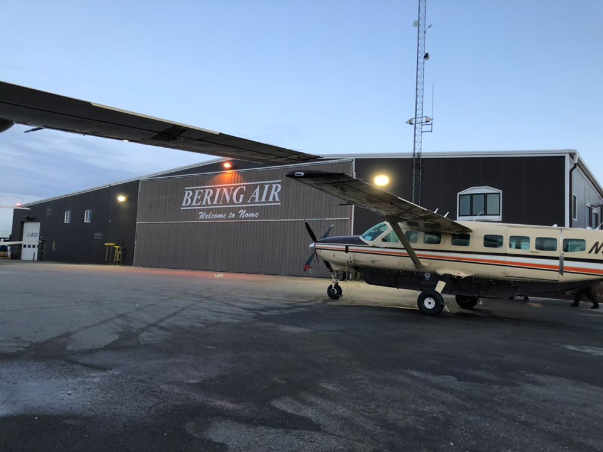

Located on the southern Seward Peninsula coast on Norton Sound of the Bering Sea, Nome was once the most-populous city in Alaska
General Information
How to Get There
From Anchorage, AK (~540 mi by air): No road connection to Nome exists; fly Alaska Airlines from Ted Stevens Anchorage International Airport directly to Nome Airport (OME) in approximately 2 hours.
Overview
Nome is a remote city on the southern coast of the Seward Peninsula, on the Bering Sea, about 160 miles from Russia, and it is known for its gold rush history and as the finish line of the Iditarod Trail Sled Dog Race. It is not connected to the rest of Alaska by road, and is reached by air, while three gravel roads extend from the town into the tundra. Nome has about 3,700 residents, a mostly Iñupiat community, and a lively frontier atmosphere.
Visitors come to Nome for the Iditarod finish, for the gold panning on the beaches, and for the road system, with spectacular opportunities to see muskoxen, reindeer, and birds. They also come for the history of the 1925 serum run, for the Carrie M. McLain Memorial Museum, and for the midnight sun and the northern lights.
History
The Iñupiat and Yup'ik peoples lived on the Seward Peninsula, and in 1898 the "Three Lucky Swedes" discovered gold in Anvil Creek, setting off a stampede. In 1900, gold was found on the beaches themselves, and by 1900 Nome had about 20,000 people, making it the largest city in Alaska. In January 1925, a diphtheria outbreak threatened the town, and 20 teams of mushers and sled dogs relayed the antitoxin serum 674 miles from Nenana in about five and a half days, a feat commemorated by the Iditarod. Mining continued through the twentieth century, and today gold is still mined, with a modern fishing and tourism economy.
Sightseeing and Popular Landmarks
Front Street is lined with historic buildings, such as the Board of Trade Saloon, and the Iditarod finish line, a burled arch, stands in the street. The Carrie M. McLain Memorial Museum has exhibits on Native culture and the gold rush, and the Nome Visitor Center shows the history of the serum run. Visitors can pan for gold on the beach, see gold dredges, and watch for muskoxen on the Nome-Teller Road, birds on the Council Road, and the Bering Land Bridge National Preserve to the north.
Culture and Museums
The Carrie M. McLain Memorial Museum collects Iñupiat artifacts and mining items, and the Nome Gold Rush exhibits show the town's wild history. The Iditarod finish in March draws thousands, and the Midnight Sun Festival, the Bering Sea Ice Golf Classic, and the Nome River Raft Race are among local events. The Iñupiat carvers of Nome are known for their ivory work.
Parks
The three roads from Nome, the Kougarok, Teller, and Council roads, total 230 miles and pass through tundra, hot springs, and mountains, with excellent bird watching for rarities from Asia. The Bering Land Bridge National Preserve, north of Nome, protects a remnant of the land bridge that once connected Asia and North America, and the Salmon Lake and Pilgrim Hot Springs are popular. Musk ox and reindeer herds roam the peninsula.
Seasons and Weather
Nome has a subarctic climate. Summers are cool, with highs in the 50s and 60s°F, and winters are very cold, with highs in the single digits and teens and about 60 inches of snow. The sea ice breaks up in June, and the road system is open in summer, when the tundra is green and the daylight is nearly continuous.
Things to Do
Explore Alaska's Famous Gold Rush City
Nome sits on the coast of the Bering Sea on Alaska's Seward Peninsula and is one of the state's most historic and remote communities. Best known for its Gold Rush heritage, Iditarod finish line, Arctic landscapes, and access to vast wilderness areas, Nome offers visitors a unique blend of history, culture, wildlife, and outdoor adventure.
Visit the Carrie M. McLain Memorial Museum
One of Nome's premier attractions, the Carrie M. McLain Memorial Museum preserves the history of the Seward Peninsula and Nome's Gold Rush era. Exhibits highlight Alaska Native culture, mining history, the 1925 Serum Run, local wildlife, and the development of the region.
Learn About Alaska Native Culture
Nome serves as a regional hub for communities across the Bering Strait region. Visitors can learn about Iñupiaq, Yup'ik, and St. Lawrence Island Yupik cultures through museums, local art galleries, cultural centers, and handcrafted artwork available throughout town.
Visit the Nome Visitor Center
The Nome Visitor Center provides exhibits on local history, wildlife, mining, transportation, and Arctic life. It is an excellent first stop for trip planning, obtaining maps, and learning about attractions located along the region's road system.
Explore Gold Rush History
Gold discoveries in 1898 transformed Nome into one of the world's great mining boomtowns. Visitors can still see historic dredges, mining equipment, old claims, and remnants of the Gold Rush era throughout the surrounding countryside.
Drive the Nome-Teller Highway
This scenic route travels northwest across the treeless tundra of the Seward Peninsula and provides expansive views of mountains, rivers, wetlands, and wildlife habitat. The drive also brings visitors closer to the Bering Strait than any other road-accessible location in North America.
Drive the Nome-Council Road
Following portions of historic transportation routes, the Nome-Council Road passes through scenic tundra, river valleys, and historic mining districts. Along the way, visitors can explore abandoned settlements, wildlife habitat, and some of the most beautiful landscapes on the Seward Peninsula.
Visit Bering Land Bridge National Preserve
Accessible by charter flight or guided excursion, Bering Land Bridge National Preserve protects landscapes connected to the ancient land bridge that once linked Asia and North America. Visitors can explore tundra, wetlands, hot springs, archaeological sites, and unique Arctic ecosystems.
See the White Alice Site
Located atop Anvil Mountain, this former Cold War communications station offers sweeping views of Nome, the Bering Sea, and the surrounding tundra. The site provides insight into Alaska's strategic role during the Cold War era.
Watch the Iditarod Finish
Each March, Nome becomes the finish line for the world-famous Iditarod Trail Sled Dog Race. Visitors can watch mushers arrive after completing the challenging wilderness route across Alaska and experience one of the state's most iconic traditions.
View the Northern Lights
From late fall through spring, Nome offers excellent aurora viewing opportunities thanks to its northern latitude and limited light pollution. Clear nights often provide spectacular displays of the aurora borealis above the Bering Sea.
Top Trails
Anvil Mountain Trail
Length: Approximately 2 to 4 miles round trip depending on route
Elevation Gain: Moderate
Difficulty: Easy
Anvil Mountain is Nome's most popular hiking destination. The summit offers panoramic views of the city, Bering Sea, tundra landscapes, and surrounding mountains. During summer, hikers often encounter wildflowers and migratory birds.
Newton Peak Trail
Length: Approximately 2 miles round trip
Elevation Gain: Approximately 1,100 feet
Difficulty: Moderate
This steep tundra hike climbs to a scenic overlook above Nome. The route provides expansive views of the Seward Peninsula and is a favorite among hikers seeking a relatively short but rewarding adventure.
Dorothy Falls Trail
Length: Approximately 4 miles round trip
Elevation Gain: Approximately 700 feet
Difficulty: Moderate
One of the region's most popular hikes, the trail features river crossings, tundra ridges, and a scenic waterfall tucked within the hills east of Nome. The route offers a classic Seward Peninsula hiking experience.
Cape Nome Coastal Route
Length: Varies by destination
Elevation Gain: Minimal
Difficulty: Easy
This shoreline route follows portions of the coast east of Nome and provides opportunities for beachcombing, birdwatching, photography, and viewing historic mining remnants along the Bering Sea.
Seward Peninsula Backcountry Routes
Length: Varies greatly
Elevation Gain: Varies
Difficulty: Moderate to Strenuous
Beyond the maintained hiking routes, the Seward Peninsula offers extensive opportunities for backcountry exploration across tundra, mountains, rivers, and wetlands. Experienced adventurers can explore vast landscapes that remain largely unchanged from the days of the Gold Rush.
This article uses material from Wikipedia as well as information from official tourism and institutional sources. Key references include Nome Convention & Visitors Bureau, Carrie M. McLain Memorial Museum, National Park Service Bering Land Bridge National Preserve, Travel Alaska, and National Weather Service Fairbanks. Wikipedia material is from the articles "Nome, Alaska" and "1925 serum run to Nome", and is available under the Creative Commons Attribution-Share-Alike License 3.0.

_2.jpg){kind=link}

_5.jpg){kind=link}
